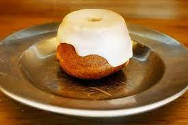

Sweet Roll
Description
The most iconic desert in all of Skyrim. It's a pastry covered in icing that is a target for many pickpockets due to its tasteness.
Ingredients
For Skyrim roll
- 1/2 tsp kosher salt
- 1/4 cup whole milk
- 2 cups plain flour
- 1 cup unsalted butter
- 5 eggs(lightly beaten)
- 2 tsp vanilla extract
- 1 2/3 cup granulated sugar
- 1 tsp baking powder
For Glaze
- 4 tbsp butter
- 2 tsbsp whole milk
- 2 cups powdered sugar
- 1 tsp vanilla extract
For Frosting
- 2 tbsp cream cheese(softened)
- 1 tbsp butter(unsalted and softened)
- 1/2 cup powdered sugar
- 2 cups heavy cream
Steps
- Preheat the oven to 350 degrees F. Combine 1 cup unsalted butter with 1 2/3 cup granulated sugar. Whisk until smooth.
- Add the 5 beaten eggs slowly to the batter. Beat with a whisk until thoroughly combined. Add the 1/4 cup whole milk and beat until there are no clumps.
- Combine 2 cups of plain flour with 1 tsp of baking powder. Once mixed add 1/2 tsp of kosher sald and 2 tsp vanilla extract. Mix well.
- Prepare the mini bundt cake pan by spraying it with non-stick cooking spray. Pour the cake mixture into the molds and bake for 22 to 25 minutes or until golden brown.
- While the rolls are cooking work on the glaze and frosting. First the glaze. Melt 4 tbsp of butter in a small saucepan. Then pour in 2 txsp of milk and mix thoroughly.
- Add 2 cups of powdered sugar and 1 tsp of vanilla extract, stirring gently. Continue stiring until everything is mixed well.
- Next the frosting. Combine 2 tbsp of cream cheese, 2 tbsp of unsalted butter, and 1/2 cup powdered sugar.
- Pour the 2 cups of heavy cream in batches. Stir until think enough to hold its own shape.
- Once the rolls are done pour the glaze on top. Let the glaze cool and then spread icing. Enjoy!